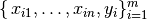

Regression¶
Note
A journey of a thousand miles begins with a single step – old Chinese proverb
In statistical modeling, regression analysis focuses on investigating the relationship between a dependent variable and one or more independent variables. Wikipedia Regression analysis
In data mining, Regression is a model to represent the relationship between the value of lable ( or target, it is numerical variable) and on one or more features (or predictors they can be numerical and categorical variables).
Linear Regression¶
Given that 
from pyspark.sql import SparkSession spark = SparkSession \ .builder \ .appName("Python Spark Linear Regression Example") \ .config("spark.some.config.option", "some-value") \ .getOrCreate()